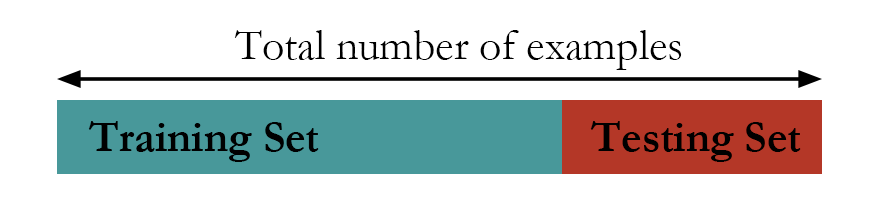
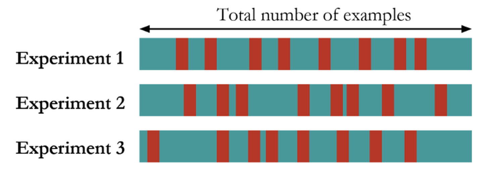
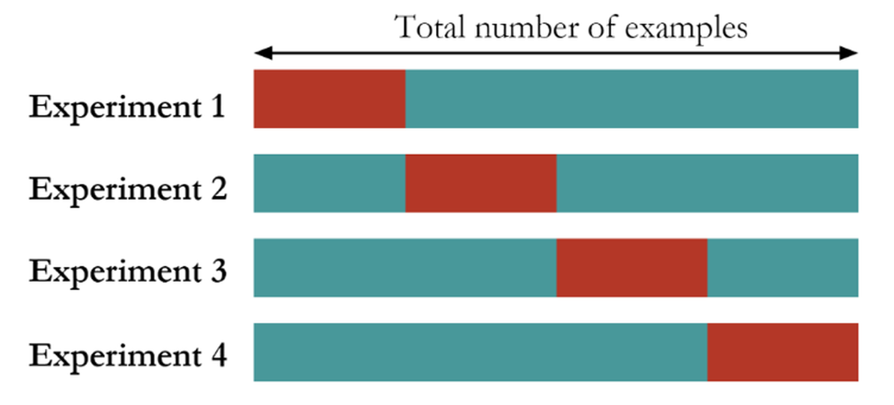
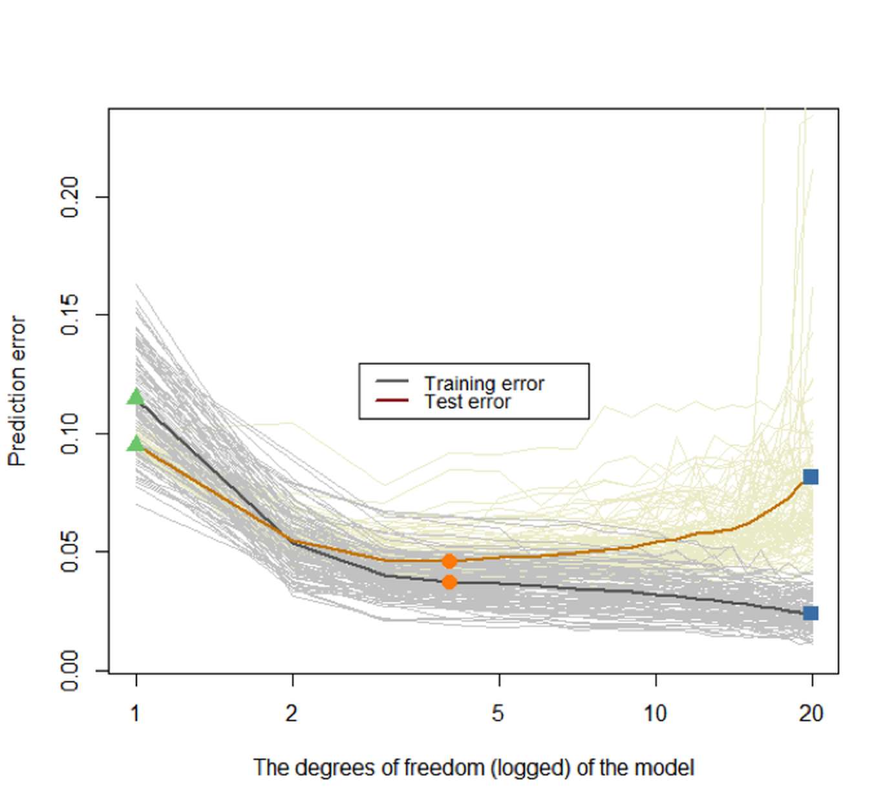
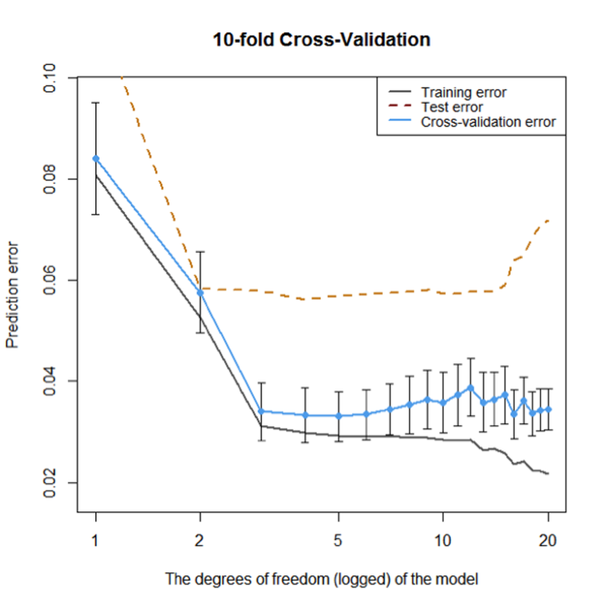

Performance metrics, such as accuracy and R-squared, are context-dependent (Dilemma 1), data-dependent (Dilemma 2), and vulnerable to conscious or unconscious manipulations (Dilemma 3). These limitations make them relative metrics. They are not the absolutes that we can rely on to evaluate models in a universal fashion in all contexts.
So, what should be the universal and objective criteria to evaluate the learning performance of a model?
To answer this question, we need to understand the concepts, underfit , good fit, and overfit .
Figure 79: Three types of model performance
Figure 79 shows three models to fit the same dataset that has two classes of data points. The first model is a linear model110 E.g., \(f_1(x)=\beta_{0}+\beta_{1} x_{1}+\beta_{2} x_{2}\). that yields a straight line as the decision boundary . Obviously, many data points are misclassified when using a linear decision boundary. Some curvature is needed to bend the decision boundary, so we introduce some second order terms and an interaction term of the two predictors to create another model111 E.g., \(f_2(x)=\beta_{0}+\beta_{1} x_{1}+\beta_{2} x_{2}+\beta_{11} x_{1}^{2}+\beta_{22} x_{2}^{2}+\beta_{12} x_{1} x_{2}\).. The decision boundary is shown in Figure 79 (middle). This improved model still could not classify the two classes completely. More interaction terms112 E.g., \(f_3(\boldsymbol{x})=\beta_{0}+\beta_{1} x_{1}+\beta_{2} x_{2}+\beta_{11} x_{1}^{2}+\beta_{22} x_{2}^{2}+\beta_{12} x_{1} x_{2}+\beta_{112} x_{1}^{2} x_{2}+\beta_{122} x_{1} x_{2}^{2}+\cdots\). are introduced into the model. The decision boundary is shown in Figure 79 (right).
Now \(100\%\) prediction accuracy could be achieved. A sense of suspicion should arise: is this too good to be true?
What we have seen in Figure 79, on the positive side, is the capacity we can develop to fit a dataset113 Fit a dataset is not necessarily model a dataset. Beginners may need time to develop a sense to see the difference between the two.. On the other hand, what is responsible for the sense of suspicion of “too good to be true” is that we didn’t see a validation process at work.
Recall a general assumption of data modeling is114 I.e., Eq. (2) in Chapter 2.
\[\begin{equation*} \underbrace{y}_{data} = \underbrace{f(\boldsymbol{x})}_{signal} + \underbrace{\epsilon}_{noise}, \end{equation*}\]
where noise is unpredictable. Bearing this framework in mind, we revisit the three models in Figure 79, which from left to right illustrate underfit, good fit, and overfit, respectively. A model called underfitted means it fails to incorporate some pattern of the signal in the dataset. A model called overfitted means it allows the noise to affect the model115 Noise, by definition, only happens by accident. While the model, by definition, is to generalize the constancy, i.e., the signal, of the data rather than its unrepeatable randomness.. A dataset could be randomly generated, but the mechanism of generating the randomness116 I.e., like a distribution model. is a constancy. The model in the middle panel of Figure 79 is able to maintain a balance: it captures the structural constancy in the data to form the model, while resisting the noise and refusing to let them bend its decision boundary.
In summary, Figure 79 illustrates that:
Overfit: Complexity of the model > complexity of the signal;
Good fit: Complexity of the model = complexity of the signal;
Underfit: Complexity of the model < complexity of the signal.
In practice, however, the ultimate dilemma is we don’t know what to expect: how much variability in the data comes from the signal or the noise? A sense of proportion always matters, and methods such as cross-validation come to our rescue.
 Figure 80: The hold-out method
In what follows, a few approaches that help us to identify the model with good fit (i.e., the one shown in Figure 79 (middle), \(f_2(x)\)) are introduced. These approaches share the same goal: to train a model on the training data and make sure the learned model would succeed on an unseen testing dataset.
 Figure 81: The random sampling method
The first approach is the hold-out method. As shown in Figure 80, the hold-out method randomly divides a given dataset into two parts. The model is trained on the training data only, while its performance is evaluated on the testing data. For instance, for the three models shown in Figure 79, each of them will be trained on the training dataset and will have their regression coefficients estimated. Then, the learned models will be evaluated on the testing data. The model that has the best performance on the testing data will be selected as the final model.
Another approach called random sampling repeats this random division many times, as shown in Figure 81. Each time, the model training and selection only uses the training dataset, and the model evaluation only uses the testing dataset. The performance of the models on the three experiments could be averaged and the model that has the best average performance is selected.
 Figure 82: The K-fold cross-validation method (here, \(K=4\))
The K-fold cross-validation is a mix of the random sampling method and the hold-out method. It first divides the dataset into \(K\) folds of equal sizes. Then, it trains a model using any combination of \(K-1\) folds of the dataset, and tests the model using the remaining one-fold of the dataset. As shown in Figure 82, the model training and testing process is repeated \(K\) times. The performance of the models on the \(K\) experiments could be averaged and the model that has the best average performance is selected.
These approaches can be used for evaluating a model’s performance in a robust way. They are also useful when we’d like to choose among model types117 E.g., decision tree vs. linear regression. or model formulations118 E.g., model 1: \(y=\beta_{0}+\beta_{1} x_1\); vs. model 2: \(y=\beta_{0}+\beta_{1} x_1+\beta_{2} x_2\).. While the model type and the model formulation is settled, for example, suppose that we have determined to use linear regression and the model formulation \(y=\beta_{0}+\beta_{1} x_1+\beta_{2} x_2\), these methods could be used to evaluate the performance of this single model. It is not uncommon that in real data analysis, these cross-validation and sampling methods are used in combination and serve different stages of the analysis process.
The 4-Step R Pipeline. Step 1 and Step 2 are standard procedures to get data into R and further make appropriate preprocessing.
# Step 1 -> Read data into R workstation
library(RCurl)
url <- paste0("https://raw.githubusercontent.com",
"/analyticsbook/book/main/data/AD.csv")
AD <- read.csv(text=getURL(url))
# Step 2 -> Data preprocessing
# Create your X matrix (predictors) and Y vector
# (outcome variable)
X <- AD[,2:16]
Y <- AD$MMSCORE
data <- data.frame(X,Y)
names(data)[16] <- c("MMSCORE")Step 3 creates a list of models to be evaluated and compared with119 Linear regression: we often compare models using different predictors; Decision tree: we often compare models with different depths; Random forests: we often compare models with a different number of trees, a different depth of individual trees, or a different number of features to be randomly picked up to split the nodes..
# Step 3 -> gather a list of candidate models
# Use linear regression model as an example
model1 <- "MMSCORE ~ ."
model2 <- "MMSCORE ~ AGE + PTEDUCAT + FDG + AV45 + HippoNV +
rs3865444"
model3 <- "MMSCORE ~ AGE + PTEDUCAT"
model4 <- "MMSCORE ~ FDG + AV45 + HippoNV"Step 4 uses the \(10\)-fold cross-validation to evaluate the models and find out which one is the best. The R code is shown below and is divided into two parts. The first part uses the sample() function to create random split of the dataset into \(10\) folds.
# Step 4 -> Use 10-fold cross-validation to evaluate all models
# First, let me use 10-fold cross-validation to evaluate the
# performance of model1
n_folds = 10
# number of fold (the parameter K in K-fold cross validation)
N <- dim(data)[1] # the sample size, N, of the dataset
folds_i <- sample(rep(1:n_folds, length.out = N))
# This randomly creates a labeling vector (1 X N) for
# the N samples. For example, here, N = 16, and
# I run this function and it returns
# the value as 5 4 4 10 6 7 6 8 3 2 1 5 3 9 2 1.
# That means, the first sample is allocated to the 5th fold,
# the 2nd and 3rd samples are allocated to the 4th fold, etc.The second part shows how we evaluate the models. We only show the code for two models, as the script for evaluating each model is basically the same.
# Evaluate model1
# cv_mse aims to make records of the mean squared error
# (MSE) for each fold
cv_mse <- NULL
for (k in 1:n_folds) {
test_i <- which(folds_i == k)
# In each iteration of the 10 iterations, remember, we use one
# fold of data as the testing data
data.train <- data[-test_i, ]
# Then, the remaining 9 folds' data form our training data
data.test <- data[test_i, ]
# This is the testing data, from the ith fold
lm.AD <- lm(model1, data = data.train)
# Fit the linear model with the training data
y_hat <- predict(lm.AD, data.test)
# Predict on the testing data using the trained model
true_y <- data.test$MMSCORE
# get the true y values for the testing data
cv_mse[k] <- mean((true_y - y_hat)^2)
# mean((true_y - y_hat)^2): mean squared error (MSE).
# The smaller this error, the better your model is
}
mean(cv_mse)
# Then, evaluate model2
cv_mse <- NULL
# cv_mse aims to make records of the mean squared error (MSE)
# for each fold
for (k in 1:n_folds) {
test_i <- which(folds_i == k)
# In each iteration of the 10 iterations, remember,
# we use one fold of data as the testing data
data.train <- data[-test_i, ]
# Then, the remaining 9 folds' data form our training data
data.test <- data[test_i, ]
# This is the testing data, from the ith fold
lm.AD <- lm(model2, data = data.train)
# Fit the linear model with the training data
y_hat <- predict(lm.AD, data.test)
# Predict on the testing data using the trained model
true_y <- data.test$MMSCORE
# get the true y values for the testing data
cv_mse[k] <- mean((true_y - y_hat)^2)
# mean((true_y - y_hat)^2): mean squared error (MSE).
# The smaller this error, the better your model is
}
mean(cv_mse)
# Then, evaluate model3 ...
# Then, evaluate model4 ...The result is shown below.
## [1] 3.17607
## [1] 3.12529
## [1] 4.287637
## [1] 3.337222We conclude that model2 is the best one, as it achieves the minimum mean squared error (MSE) .
Simulation Experiment. How do we know the cross-validation could identify a good model, i.e., the one that neither overfits nor underfits the data? Let’s design a simulation experiment to study the performance of cross-validation120 A large portion of the R script in this subsection was modified from malanor.net, now no longer an active site..
The purpose of the experiment is two-fold: (1) to show that the cross-validation can help us mitigate the model selection problem, and (2) to show that R is not just a tool for implementing data analysis methods, but also an experimental tool to gain first-hand experience of any method’s practical performance.
Our experiment has a clearly defined metric to measure the complexity of the signal. We resort to the spline models121 A good tutorial:
Eilers, P. and Marx, B., Splines, Knots, and Penalties, Computational statistics, Volume 2, Issue 6, Pages 637-653, 2010. that could be loosely put into the category of regression models, which have a precise mechanism to tune a model’s complexity, i.e., through the parameter of degree of freedom (df). For simplicity, we simulate a dataset with one predictor and one outcome variable. In R, we use the ns() function to simulate the spline model.
The outcome is a nonlinear curve122 Here, we use the B-spline basis matrix for natural cubic splines to create a nonlinear curve. This topic is beyond the scope of this book.. We use the degree of freedom (df) parameter in the ns() function to control the complexity of the curve, i.e., the larger the df, the more “nonlinear” the curve. As this curve is the signal of the data, we also simulate noise through a Gaussian distribution using the rnorm() function.
# Write a simulator to generate dataset with one predictor and
# one outcome from a polynomial regression model
seed <- rnorm(1)
set.seed(seed)
gen_data <- function(n, coef, v_noise) {
eps <- rnorm(n, 0, v_noise)
x <- sort(runif(n, 0, 100))
X <- cbind(1,ns(x, df = (length(coef) - 1)))
y <- as.numeric(X %*% coef + eps)
return(data.frame(x = x, y = y)) }The following R codes generate the scattered grey data points and the true model as shown in Figure 83.
# install.packages("splines")
require(splines)
## Loading required package: splines
# Simulate one batch of data, and see how different model
# fits with df from 1 to 50
n_train <- 100
coef <- c(-0.68,0.82,-0.417,0.32,-0.68)
v_noise <- 0.2
n_df <- 20
df <- 1:n_df
tempData <- gen_data(n_train, coef, v_noise)
x <- tempData[, "x"]
y <- tempData[, "y"]
# Plot the data
x <- tempData$x
X <- cbind(1, ns(x, df = (length(coef) - 1)))
y <- tempData$y
plot(y ~ x, col = "gray", lwd = 2)
lines(x, X %*% coef, lwd = 3, col = "black")
Figure 83: The simulated data from a nonlinear regression model with B-spline basis matrix (df=4), and various fitted models with different degrees of freedom
We then fit the data with a variety of models, starting from df=1123 I.e., corresponds to the linear model. to df=20124 I.e., a very complex model.. The fitted curves are overlaid onto the scattered data points in Figure 83. It can be seen that the linear model obviously underfits the data, as it lacks the flexibility to characterize the complexity of the signal sufficiently. The model that has (df=20) overfits the data, evidenced by its complex shape. It tries too hard to fit the local patterns, i.e., by all the turns and twists of its curve, while the local patterns were mostly induced by noise125 A model that tries too hard to fit the training data by absorbing its noise into its shape will not perform well on future unseen testing data, since the particular noise in the training data would not appear in the testing data—if a noise repeats itself, it is not noise anymore but signal..
# Fit the data using different models with different
# degrees of freedom (df)
fit <- apply(t(df), 2, function(degf) lm(y ~ ns(x, df = degf)))
# Plot the models
plot(y ~ x, col = "gray", lwd = 2)
lines(x, fitted(fit[[1]]), lwd = 3, col = "darkorange")
lines(x, fitted(fit[[4]]), lwd = 3, col = "dodgerblue4")
# lines(x, fitted(fit[[10]]), lwd = 3, col = "darkorange")
lines(x, fitted(fit[[20]]), lwd = 3, col = "forestgreen")
legend(x = "topright", legend = c("True function",
"Linear fit (df = 1)", "Best model (df = 4)",
"Overfitted model (df = 15)","Overfitted model (df = 20)"),
lwd = rep(3, 4), col = c("black", "darkorange", "dodgerblue4",
"forestgreen"), text.width = 32, cex = 0.6)Note that, in this example, we have known that the true model has df=4. In reality, we don’t have this knowledge. It is dangerous to keep increasing the model complexity to aggressively pursue better prediction performance on the training data. To see the danger, let’s do another experiment.
First, we use the following R code to generate a testing data from the same distribution of the training data.
# Generate test data from the same model
n_test <- 50
xy_test <- gen_data(n_test, coef, v_noise)Then, we fit a set of models from linear (df=1) to (df=20) using the training dataset. And we compute the prediction errors of these models using the training dataset and testing dataset separately. This is done by the following R script.
# Compute the training and testing errors for each model
mse <- sapply(fit, function(obj) deviance(obj)/nobs(obj))
pred <- mapply(function(obj, degf) predict(obj, data.frame(x =
xy_test$x)),fit, df)
te <- sapply(as.list(data.frame(pred)),
function(y_hat) mean((xy_test$y - y_hat)^2))
Figure 84: Prediction errors of the models (from (df\(=0\)) to (df\(=20\))) on the training dataset and testing data
We further present the training and testing errors of the models in Figure 84, by running the R script below.
# Plot the errors
plot(df, mse, type = "l", lwd = 2, col = gray(0.4),
ylab = "Prediction error",
xlab = "The degrees of freedom (logged) of the model",
ylim = c(0.9*min(mse), 1.1*max(mse)), log = "x")
lines(df, te, lwd = 2, col = "orange3")
points(df[1], mse[1], col = "palegreen3", pch = 17, cex = 1.5)
points(df[1], te[1], col = "palegreen3", pch = 17, cex = 1.5)
points(df[which.min(te)], mse[which.min(te)], col = "darkorange",
pch = 16, cex = 1.5)
points(df[which.min(te)], te[which.min(te)], col = "darkorange",
pch = 16,cex = 1.5)
points(df[15], mse[15], col = "steelblue", pch = 15, cex = 1.5)
points(df[15], te[15], col = "steelblue", pch = 15, cex = 1.5)
legend(x = "top", legend = c("Training error", "Test error"),
lwd = rep(2, 2), col = c(gray(0.4), "orange3"), text.width = 0.3,
cex = 0.8)Figure 84 shows that the prediction error on the training dataset keeps decreasing with the increase of the df. This is consistent with our theory, and this only indicates a universal phenomenon that a more complex model can fit the training data better. On the other hand, we could observe that the testing error curve shows a U-shaped curve, indicating that an optimal model126 I.e., the dip location on the U-shaped curve is where the optimal df could be found. exists in this range of the model complexity.
As this is an observation made on one dataset that was randomly generated, we should repeat this experiment multiple times to see if our observation is robust. The following R code repeats this experiment \(100\) times and presents the results in Figure 85.
# Repeat the above experiments in 100 times
n_rep <- 100
n_train <- 50
coef <- c(-0.68,0.82,-0.417,0.32,-0.68)
v_noise <- 0.2
n_df <- 20
df <- 1:n_df
xy <- res <- list()
xy_test <- gen_data(n_test, coef, v_noise)
for (i in 1:n_rep) {
xy[[i]] <- gen_data(n_train, coef, v_noise)
x <- xy[[i]][, "x"]
y <- xy[[i]][, "y"]
res[[i]] <- apply(t(df), 2,
function(degf) lm(y ~ ns(x, df = degf)))
}
# Compute the training and test errors for each model
pred <- list()
mse <- te <- matrix(NA, nrow = n_df, ncol = n_rep)
for (i in 1:n_rep) {
mse[, i] <- sapply(res[[i]],
function(obj) deviance(obj)/nobs(obj))
pred[[i]] <- mapply(function(obj, degf) predict(obj,
data.frame(x = xy_test$x)),res[[i]], df)
te[, i] <- sapply(as.list(data.frame(pred[[i]])),
function(y_hat) mean((xy_test$y - y_hat)^2))
}
# Compute the average training and test errors
av_mse <- rowMeans(mse)
av_te <- rowMeans(te)
# Plot the errors
plot(df, av_mse, type = "l", lwd = 2, col = gray(0.4),
ylab = "Prediction error",
xlab = "The degrees of freedom (logged) of the model",
ylim = c(0.7*min(mse), 1.4*max(mse)), log = "x")
for (i in 1:n_rep) {
lines(df, te[, i], col = "lightyellow2")
}
for (i in 1:n_rep) {
lines(df, mse[, i], col = gray(0.8))
}
lines(df, av_mse, lwd = 2, col = gray(0.4))
lines(df, av_te, lwd = 2, col = "orange3")
points(df[1], av_mse[1], col = "palegreen3", pch = 17, cex = 1.5)
points(df[1], av_te[1], col = "palegreen3", pch = 17, cex = 1.5)
points(df[which.min(av_te)], av_mse[which.min(av_te)],
col = "darkorange", pch = 16, cex = 1.5)
points(df[which.min(av_te)], av_te[which.min(av_te)],
col = "darkorange", pch = 16, cex = 1.5)
points(df[20], av_mse[20], col = "steelblue", pch = 15, cex = 1.5)
points(df[20], av_te[20], col = "steelblue", pch = 15, cex = 1.5)
legend(x = "center", legend = c("Training error", "Test error"),
lwd = rep(2, 2), col = c(gray(0.4), "darkred"),
text.width = 0.3, cex = 0.85)

Figure 85: Prediction errors of the models (from df\(=0\) to df\(=20\)) on the training dataset and testing dataset of \(100\) replications. The two highlighted curves represent the mean curves of the \(100\) replications of the training and testing error curves, respectively
Again, we can see that the training error keeps decreasing when the model complexity increases, while the testing error curve has a U-shape. The key to identify the best model complexity is to locate the lowest point on the U-shaped error curve obtained from a testing dataset.
These experiments show that we need a testing dataset to evaluate the model to guide the model selection . Suppose you don’t have a testing dataset. The essence of a testing dataset is that it is not used for training the model. So you create one. What the hold-out, random sampling, and cross-validation approaches really do is use the training dataset to generate an estimate of the error curve that is supposed to be obtained from a testing dataset127 See Figure 92 and its associated text in the Remarks section for more discussion..
To see that, let’s consider a scenario that there are \(200\) samples, and a client has split them into two parts, i.e., a training dataset with \(100\) samples and a testing dataset with another \(100\) samples. The client only sent the training dataset to us. So we use the \(10\)-fold cross-validation on the training dataset, using the following R code, to evaluate the models (df from \(0\) to \(20\)).
# Cross-validation
set.seed(seed)
n_train <- 100
xy <- gen_data(n_train, coef, v_noise)
x <- xy$x
y <- xy$y
fitted_models <- apply(t(df), 2,
function(degf) lm(y ~ ns(x, df = degf)))
mse <- sapply(fitted_models,
function(obj) deviance(obj)/nobs(obj))
n_test <- 100
xy_test <- gen_data(n_test, coef, v_noise)
pred <- mapply(function(obj, degf)
predict(obj, data.frame(x = xy_test$x)),
fitted_models, df)
te <- sapply(as.list(data.frame(pred)),
function(y_hat) mean((xy_test$y - y_hat)^2))
n_folds <- 10
folds_i <- sample(rep(1:n_folds, length.out = n_train))
cv_tmp <- matrix(NA, nrow = n_folds, ncol = length(df))
for (k in 1:n_folds) {
test_i <- which(folds_i == k)
train_xy <- xy[-test_i, ]
test_xy <- xy[test_i, ]
x <- train_xy$x
y <- train_xy$y
fitted_models <- apply(t(df), 2, function(degf) lm(y ~
ns(x, df = degf)))
x <- test_xy$x
y <- test_xy$y
pred <- mapply(function(obj, degf) predict(obj,
data.frame(ns(x, df = degf))),
fitted_models, df)
cv_tmp[k, ] <- sapply(as.list(data.frame(pred)),
function(y_hat) mean((y - y_hat)^2))
}
cv <- colMeans(cv_tmp)Then we can visualize the result in Figure 86 (the R script is shown below). Note that, in Figure 86, we overlay the result of the \(10\)-fold cross-validation (based on the \(100\) training samples) with the prediction error on the testing dataset to get an idea about how closely the \(10\)-fold cross-validation can approximate the testing error curve128 Remember that, in practice, we will not have access to the testing data, but we want our model to succeed on the testing data, i.e., to obtain the lowest error on the testing error curve. Thus, using cross-validation to mimic this testing procedure based on our training data is a “rehearsal.”.
# install.packages("Hmisc")
require(Hmisc)
plot(df, mse, type = "l", lwd = 2, col = gray(0.4),
ylab = "Prediction error",
xlab = "The degrees of freedom (logged) of the model",
main = paste0(n_folds,"-fold Cross-Validation"),
ylim = c(0.8*min(mse), 1.2*max(mse)), log = "x")
lines(df, te, lwd = 2, col = "orange3", lty = 2)
cv_sd <- apply(cv_tmp, 2, sd)/sqrt(n_folds)
errbar(df, cv, cv + cv_sd, cv - cv_sd, add = TRUE,
col = "steelblue2", pch = 19,
lwd = 0.5)
lines(df, cv, lwd = 2, col = "steelblue2")
points(df, cv, col = "steelblue2", pch = 19)
legend(x = "topright",
legend = c("Training error", "Test error",
"Cross-validation error"),
lty = c(1, 2, 1), lwd = rep(2, 3),
col = c(gray(0.4), "darkred", "steelblue2"),
text.width = 0.4, cex = 0.85)

Figure 86: Prediction errors of the models (from df\(=0\) to df\(=20\)) on the training dataset without cross-validation, on the training dataset using \(10\)-fold cross-validation, and testing data of \(100\) samples, respectively
Overall, Figure 86 shows that the \(10\)-fold cross-validation could generate fair evaluation of the models just like an independent and unseen testing dataset. Although its estimation of the error is smaller than the error estimation on the testing dataset, they both point towards the same range of model complexity that will neither overfit nor underfit the data.